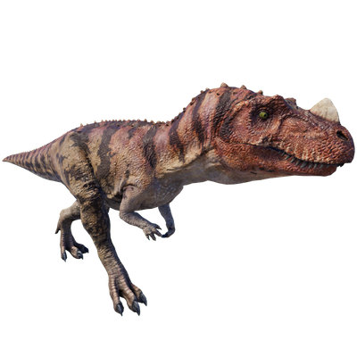

Useful Website
At around 6m in length and just under one tonne in weight, Ceratosaurus is an average-sized theropod from the Late Jurassic period. This carnivore is best known for the large horn on its snout and two further horns above its eyes, which gave rise to its name – Ceratosaurus translates to ‘horned lizard’.
